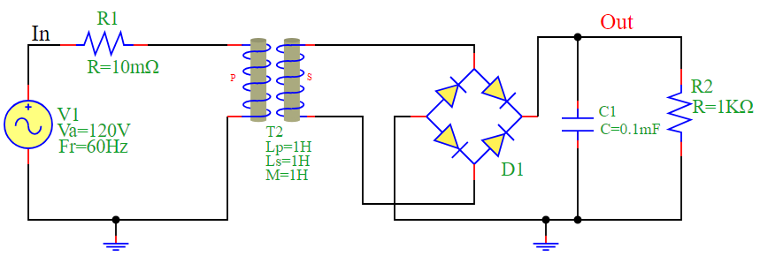
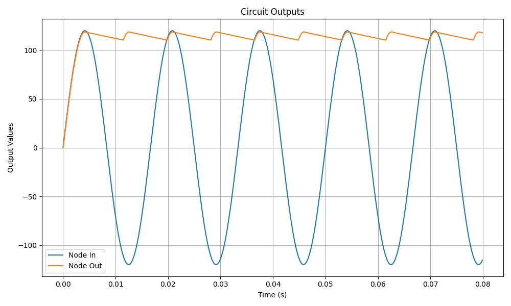

AC to DC Converter
An AC to DC converter is an electronic circuit that converts alternating current (AC) input voltage into direct current (DC) output voltage. This is commonly achieved using a rectifier circuit, followed by a filtering capacitor to smooth the DC output.
Circuit Description
The circuit consists of:
AC Voltage Source (V1): Provides an alternating voltage of 120V at a frequency of 60Hz.
Resistor (R1): A small series resistance of 10mΩ.
Transformer (T2): Steps up or down the voltage.
Diode Bridge (D1): A full-wave rectifier that converts AC to pulsating DC.
Capacitor (C1): Acts as a filter to smooth the rectified voltage.
Load Resistor (R2): Represents the circuit’s output load with a resistance of 1KΩ.
Circuit Diagram
Mathematical Equations
AC Input Voltage:
\(V_{in}(t) = V_a \sin(2\pi f t)\)
Rectified Output Voltage (Ideal Case):
\(V_{out}(t) = |V_{in}(t)|\)
Filtered DC Output Voltage Approximation:
\(V_{dc} \approx V_{peak} - I_{load} \times R_{equiv}\)
where:
\(V_{peak}\) is the peak AC voltage after rectification,
\(I_{load}\) is the current through the load resistor,
\(R_{equiv}\) accounts for internal resistance and voltage drops.
Python Simulation Code
The following Python script simulates the AC to DC conversion using the PyAMS library.
from pyams_lib import circuit
from models import DiodeBridge, SinVoltage, Resistor, Capacitor, Transformer
# Define elements
D1 = DiodeBridge("sec","Out","N05","0")
V1 = SinVoltage("In","0")
R1 = Resistor("In","N01")
R2 = Resistor("Out","0")
C1 = Capacitor("Out","0")
T2 = Transformer("N01","0","sec","N05")
# Set component values
V1.setParams("Va=120V Fr=60Hz ")
R1.setParams("R=10mΩ")
R2.setParams("R=1KΩ")
C1.setParams("C=0.1mF ")
T2.setParams("Lp=1H Ls=1H M=1H")
# Create circuit and add elements
circuit = circuit()
circuit.addElements({'D1':D1,'V1':V1,'R1':R1,'R2':R2,'C1':C1,'T2':T2})
# Set outputs for plotting;
circuit.setOutPuts("In","Out")
# Perform transient analysis
circuit.analysis(mode="tran",start=0,stop=0.08,step=0.0001)
circuit.run()
circuit.plot()
Simulation Results
The following plot illustrates the input and output voltages of the AC to DC converter.
Conclusion
The simulation demonstrates how an AC signal is rectified and filtered to produce a nearly constant DC output. The capacitor smooths the rectified waveform, reducing ripples and providing a more stable DC voltage suitable for electronic applications.